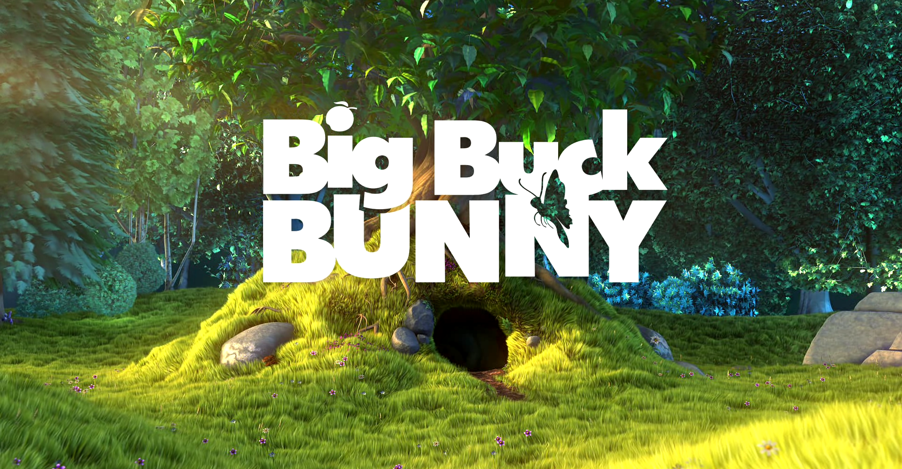
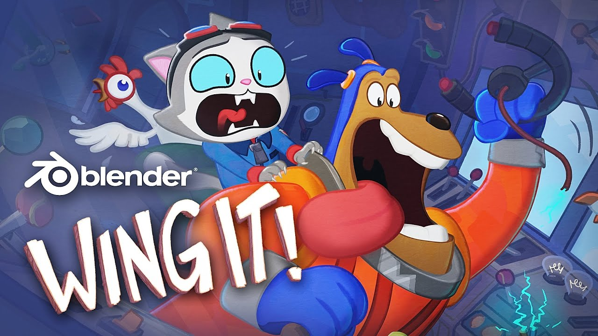

Personalemanual & Tutorials
Hurtig, praktisk guide til sygeplejersker og læger der bruger NXT/Care WebXR-oplevelser sammen med børn på afdelingen. Fem spil, tre informationsvideoer, to tegnefilm — ét greb. Fokus på det essentielle — kom i gang på under et minut.
0Før du starter
Hver oplevelse er designet til at køre mens en procedure er i gang på den ene arm. Barnet bruger kun den frie arm. Du skal ikke bruge tid på menuer — appen tager hånd om det selv.
Inden barnet får brillen på
Tjek brillen
Quest 3 er opladet. Linser er rene. Justér hovedremmen så den sidder fast uden at trykke.
Vælg oplevelse
Aktivt spil ved nålestik (Krystal Banen) eller rolig vejrtrækning før/efter (Puste Ven).
Forklar kort
"Vi sætter en magisk brille på. Du kan stadig se rummet — der kommer bare nogle sjove ting frem foran dig."
Sæt brillen på
Den frie hånd er den brillen sporer. Den anden arm må gerne hvile — appen ignorerer den.
💎 Krystal Banen
Et hurtigt distraktionsspil til brug under nålestik, blodprøver, IV-anlæggelse og andre én-arms-procedurer.

Barnet styrer en lille boble der løber gennem tre baner og samler krystaller. Spillet styres med små vrid af håndleddet til siderne — ikke med knapper. Det er præcis det den frie arm naturligt kan gøre.
Sådan starter spillet
Tryk Start
Tryk på "▶" i overlay'et før brillen sættes på. Eller lad barnet pege og klikke selv.
Hånd-valg
Bed barnet løfte den frie hånd op foran sig. Inden 4 sekunder låser spillet sig fast på den hånd — konfetti bekræfter valget.
Vrid for at skifte bane
Lille vrid med håndleddet til venstre/højre flytter boblen. Ingen knapper — bare bevægelse.
Saml krystaller, undgå bomber
Krystaller giver point. Bomber tager liv (3 i alt). Hastigheden stiger gradvist.
Sådan introducerer du det
Hvad du skal kigge efter
- Hvis barnet ikke når at løfte armen i tide — appen vælger alligevel automatisk efter 4 sek. Det er en safety net for syge eller meget små børn.
- Hvis boblen står stille — barnet vrikker måske for blidt. Vis selv en lille vridning af håndleddet og sig "sådan her".
- Game Over-skærm efter 3 liv — appen genstarter automatisk efter 4 sekunder. Barnet behøver ikke gøre noget.
🫧 Puste Ven
Guidet boks-vejrtrækning med en venlig figur. Hænderne kræves ikke under selve øvelsen — barnet bruger kun stemmen og åndedrættet.

Puste Ven er en lille bobleagtig figur der åbner armene når barnet skal trække vejret ind, holder pause, og puster bobler ud sammen med barnet. Mikrofonen registrerer pust — jo kraftigere pust, jo flere bobler.
Hvornår bruger man den?
Før procedure
Til at falde til ro. 1–2 minutter er nok til at sænke vejrtrækning og puls.
Efter procedure
Til at lande igen efter en grædetur eller en stresset oplevelse.
Ved smerte
Kombinerer fokuseret vejrtrækning og visuel berolelse — bredt brugt ved kronisk smerte og angst.
Ved indsovning
Kør hele 5-minutters sessionen før sengetid. Mange børn falder i søvn inden den er færdig.
Boks-vejrtrækningens fire faser
Figuren guider visuelt: den vokser når barnet skal puste ind, holder pause, krymper når der pustes ud, og hviler. Tekstboblen siger hvad der skal ske — på dansk.
Sådan introducerer du det
Hvad du skal kigge efter
- Intro-fasen varer 12 sekunder — figuren stiger op og siger "Hej!". Lad barnet kigge i ro.
- Hele sessionen er 5 minutter — den slutter automatisk. Du behøver ikke gøre noget.
- Hvis barnet ikke puster — bobler kommer alligevel, men færre. Animationen er beroligende i sig selv.
- Hvis barnet falder i søvn — bare lad sessionen køre færdig. Tag forsigtigt brillen af bagefter.
🦷 Bag Tænderne
Et aktivt spil hvor barnet renser tænder for små bakterier. Især god til tandlægebesøg, mundpleje, og børn med behandlingsangst i munden.

Barnet ser et stort sæt tænder foran sig. Små bakterier hopper rundt og forsøger at slå sig ned på tænderne. Med håndleddets vrid markerer barnet en tand — et lille knib med tommel og pegefinger fjerner bakterien. Hvis bakterien får lov at sidde for længe, gulner tanden. Får alle 16 tænder lov at gulne helt, starter spillet forfra.
Sådan starter spillet
Tryk på 🦷
Stort tand-ikon på startskærmen. Tryk for at starte sessionen.
Hånd-valg
Bed barnet løfte den frie arm — samme som de andre oplevelser. Konfetti bekræfter valget.
Vrid for at navigere
Vrid håndleddet til siderne for at skifte tand. Vrid frem/tilbage for at skifte mellem over- og undermund.
Knib for at rense
Når den grønne ring er på den rigtige tand, knib tommel og pegefinger sammen. Bakterien forsvinder med en lille gnistsky.
Sådan introducerer du det
Hvad du skal kigge efter
- Højscore gemmes lokalt — barnet kan vende tilbage og slå sin egen rekord. Stor motivation for gentagne besøg.
- Sværhedsgraden stiger over 4 minutter — bakterier kommer hurtigere. Det matcher godt en typisk tandlægekontrol.
- Hvis barnet ikke trykker — bakterierne gulner tænderne langsomt. Det er ufarligt — spillet nulstiller bare.
🀄 Mahjong
Klassisk parfindings-spil med smukke mahjong-brikker. God til længere ophold, sengebundne børn, og søskende der venter.

Barnet ser et stort 3D-mahjong-bræt med 144 brikker stablet i lag. Med en lyspeg-stråle fra hånden vælger barnet to ens brikker — de forsvinder med en lille fanfare. Målet er at fjerne alle brikkerne. Spillet er altid løsbart — algoritmen sikrer at der findes en vej igennem.
Sådan starter spillet
Tryk på 🀄 Start
Mahjong-knappen på startskærmen. Tryk én gang for at åbne sessionen.
Hånd-valg
Løft den frie arm op foran. Samme procedure som de andre oplevelser.
Sigt med strålen
En lyseblå stråle viser hvor barnet peger. Lys cirkel = brikken er fri og kan vælges. Rød cirkel = brikken er blokeret.
Knib to ens brikker
Sigt på en brik og knib tommel + pegefinger sammen. Find så en til med samme symbol. Ved match: brikker letter og forsvinder med fanfare. Ved fejl: rødt blink, prøv igen.
Sådan introducerer du det
Hvad du skal kigge efter
- Vinde-skærm med konfetti når alle brikker er fjernet. Tryk en gang for at starte et nyt bræt.
- Hvis barnet vælger en forkert brik — knib igen på samme brik for at afmarkere den.
- Spillet kan ikke "gå i stå" — der er altid en løsning. Hvis barnet er fastlåst, foreslå at kigge på et andet område af brættet.
- Sessions kan vare 10–30 minutter — barnet kan også klap-afslutte midt i et spil. Næste session starter et nyt bræt.
🦋 Sommer Fugl
En magisk sommerfugl der følger barnets hånd. Bevæg hånden — blomster spirer frem, sommerfuglen flyver hen og drikker nektar. Ingen mål, ingen tab.

Når barnet løfter hånden, sidder en lille sommerfugl over den og følger hver bevægelse. Når hånden bevæges, spirer farverige blomster frem i luften. Sommerfuglen flyver over til hver blomst, drikker nektar, og blomsten forsvinder i en eksplosion af lys. Hver session viser en tilfældig sommerfuglart — Monarch, Blue Morpho, Sunset Fairy, Starry Night, og flere.
Sådan starter oplevelsen
Tryk på 🦋 Start
Stort sommerfugle-ikon på startskærmen. Tryk for at åbne.
Hånd-valg
Den hånd der løftes højest bliver til "sommerfuglens hånd". Resten af sessionen følger den.
Bevæg hånden langsomt
Blomster spirer frem foran og rundt om hånden. Sommerfuglen flyver mellem dem.
Hvil eller leg
Barnet kan stoppe op og lade sommerfuglen sidde — eller bevæge hånden mere for flere blomster. Begge dele er rigtige.
Sådan introducerer du det
Særligt velegnet til
- Børn på autismespektret — forudsigelig, sansestyrket, ingen sociale eller præstations-krav.
- Sensorisk overvældede børn — bløde farver, langsomme bevægelser, ingen pludselige lyde.
- Meget små børn (3–5 år) — kræver kun at man bevæger hånden, ingen instruktioner.
- Børn med kognitiv eller motorisk forsinkelse — alle bevægelser belønnes med smukke effekter.
- Forældre eller søskende der venter — kan også bruges af voksne der har brug for et øjebliks ro.
📺 Informationsvideoer
Korte, rolige forklaringsvideoer der viser barnet hvordan en procedure foregår — set fra patientens perspektiv. Bruges som forberedelse, så det rigtige indgreb ikke er en overraskelse.

Tre videoer er tilgængelige på platformen i dag:
- CT-scanner — viser hvordan det føles og lyder at ligge inde i scanneren.
- Lattergas — viser hvordan masken sættes på og hvordan effekten føles.
- Blodprøve — viser hele forløbet fra venen findes til plasteret sættes på.
Sådan fremstår videoen for barnet
- Stort fladt videopanel foran barnet — ca. 1,7 m bredt, placeret 1,5 m fremme. Som at se en biograf-skærm svæve i luften.
- Panelet følger blidt med hovedet — drejer barnet hovedet, glider panelet med, så det altid er foran. Det "låser sig" ikke fast på væggen i rummet.
- Panelet holder sig vandret — tipper aldrig sidelæns eller op/ned, selv om barnet kigger op eller ned. Det reducerer kvalme.
- Hospitalsrummet er stadig synligt rundt om panelet — passthrough er aktivt. Barnet kan stadig se dig og sengen.
- Lyden afspilles i brillens indbyggede højtalere. Hvis tilladelser ikke er givet, starter videoen muted og slår automatisk lyden til efter 1 sekund.
Sådan starter du en video
Vælg video
I afdelingens opstartsmenu, åbn den ønskede video. Hver video har sin egen URL/QR-kode.
Tryk afspil
Stort hvidt afspil-ikon midt på skærmen. Tryk én gang i overlay'et — eller bed barnet pege og knibe inde i brillen.
AR-tilstand starter automatisk
Brillen skifter til AR-passthrough og placerer videopanelet foran barnet. Ingen hånd-valg nødvendigt — det er en passiv oplevelse.
Barnet ser videoen
Læn dig tilbage og lad videoen køre. Den varer typisk 2–4 minutter. Du kan blive ved siden af og tale med barnet undervejs hvis det er beroligende.
Sådan introducerer du det
Sådan lukkes en video — tre måder
Auto-luk
Videoen lukker sig selv 1 sekund efter slutningen. Du behøver ikke gøre noget.
Klap-gestik
Hænderne sammen i 6 sek — samme exit som alle andre oplevelser.
Pause / pinch-hold
Kort knib = pause/play. Knib og hold i 6 sek = afslut sessionen.
🎬 Tegnefilm
To korte tegnefilm uden medicinsk indhold. Bruges som ren underholdning — til at fordrive ventetid, berolige et grædende barn, eller belønning efter en svær procedure.

To tegnefilm er tilgængelige på platformen. Indholdet er børnevenligt og kvalitetssikret centralt — vi nævner ikke titler eller plot her, da bibliotek og rettigheder kan opdateres uafhængigt af denne manual.

Sådan starter du en tegnefilm
Vælg film
To tegnefilm-valg i opstartsmenuen. Spørg barnet hvilken det vil se — visuel forhåndsvisning hjælper hvis barnet ikke kan læse.
Tryk afspil
Samme afspil-ikon som informationsvideoerne. Tryk én gang for at starte.
Lad barnet kigge
Skærmen kommer frem foran barnet. Hospitalsrummet er stadig synligt — barnet kan stadig række ud efter dig.
Filmen lukker sig selv
Når filmen er færdig, lukker brillen sessionen automatisk efter 1 sekund. Klap-gestik virker også til at afslutte tidligt.
Sådan introducerer du det
Hvad du skal kigge efter
- Barnet kan stadig høre dig — lyden er ikke isolerende. Tal roligt og normalt.
- Hvis barnet bliver urolig — afslut med klap-gestik. Filmen kan altid genstartes senere.
- Pause med kort knib — godt hvis et søskende eller en forælder kommer ind i rummet og barnet vil se hvem det er.
- Skærmen følger hovedet blidt — barnet kan ikke "miste" filmen ved at dreje hovedet. Det skaber tryghed for små børn.
!Sådan afslutter du en session
Alle NXT/Care-oplevelser har samme exit-gestik. Barnet behøver ikke trykke på knapper — du heller ikke. Det er den eneste gestik du som personale skal kende.
Klap hænderne sammen
Hænderne mod hinanden (15 cm eller tættere). Brillen sporer dem direkte — ingen knapper.
Hold i 6 sekunder
En hvid HUD-bjælke viser nedtælling så barnet ved det virker.
Sessionen slutter
Brillen vender tilbage til startskærmen. Sikkert hver gang.
Hvis barnet ikke selv kan klappe
Du kan ikke ligefrem "tage hænderne fra barnet" — men du kan holde dine egne to håndflader sammen foran brillens kameraer (ca. 30 cm fra ansigtet) i 6 sekunder. Brillen sporer hvilke som helst hænder der er synlige, så det virker uanset hvem der står foran. Eller du kan bede barnet om at sige stop — og bruge fallback-knappen.
Alternativ exit (kun personale)
Øverste højre hjørne har et lille ×-symbol i overlay'et. Tryk her hvis klap-gestikken ikke virker — fx hvis hænderne er ude af brillens synsfelt eller dækket af et tæppe. Dette er en personale-fallback, ikke noget barnet skal vide om.
?Hvilken oplevelse skal jeg vælge?
| Situation | Anbefaling | Hvorfor |
|---|---|---|
| Nålestik / blodprøve under 5 min | Krystal Banen | Aktiv distraktion virker bedst ved kortvarige stik. Barnet ser ikke nålen. |
| IV-anlæggelse, sårpleje | Krystal Banen | Holder den frie arm beskæftiget — ingen risiko for at trække i den anden arm. |
| Tandlæge / mundpleje / tandkontrol | Bag Tænderne | Spillets tema spejler proceduren — barnet får et symbolsk greb om situationen. |
| Forberedelse til CT-scanning | Informationsvideo: CT-scanner | Viser hvordan scanneren ser ud og lyder fra patientens perspektiv. Reducerer angst inden indgrebet. |
| Forberedelse til lattergasbedøvelse | Informationsvideo: Lattergas | Viser masken og effekten — fjerner overraskelsen ved første gang. |
| Forberedelse til blodprøve / venflon | Informationsvideo: Blodprøve | Hele forløbet vist på forhånd. Brug også Krystal Banen under selve stikket. |
| Ventetid mellem procedurer / på laboratoriesvar | Tegnefilm | Ren underholdning uden medicinsk indhold — fordriver tid uden at trætte barnet. |
| Belønning efter svær procedure | Tegnefilm | Børn forbinder oplevelsen positivt med afdelingen — vigtigt for gentagne behandlinger. |
| Lange undersøgelser hvor barnet skal ligge stille (EEG, infusion) | Mahjong | Rolig fokus, ingen pludselige lyde, kan vare op til 30 min uden tab af engagement. |
| Optakt til procedure | Puste Ven | Sænker puls og angst inden indgrebet starter. |
| Efter en stresset oplevelse | Puste Ven eller Sommer Fugl | Vejrtrækning hvis barnet er pirret. Sommerfugle hvis barnet er overvældet og helst vil have ro. |
| Søvnløshed / aftenrutine | Puste Ven | 5 min boks-vejrtrækning er klinisk dokumenteret beroligende. |
| Sensorisk overvældelse / autism / palliativ | Sommer Fugl | Ingen mål, ingen tab, blød sansestimulering. Den eneste oplevelse uden spilstruktur. |
| Søskende eller forældre i venteværelse | Mahjong | Roligt og diskret. Voksne kan også finde det meditativt. |
| Barn under 4 år | Sommer Fugl (med vurdering) | Quest 3 anbefales fra 5 år. For yngre, kun under tæt opsyn — vælg den oplevelse uden hånd-input. |
⚠Fejlfinding
Hurtig oversigt over de oftest forekommende problemer på afdelingen.
| Problem | Løsning |
|---|---|
| Barnet kan ikke se billedet / sort skærm | Tjek at brillen sidder korrekt og linsen ikke er dugget. Brug fingeren foran linsen — hvis intet sker, genstart appen. |
| Hånd-valg vælger forkert hånd | Bed barnet sænke begge arme, vent 4 sek, og start sessionen igen. Den frie hånd skal være højest når sessionen starter. |
| Boblen i Krystal Banen reagerer ikke | Vrikket er for blidt. Vis selv og overdriv lidt. Hvis stadig ikke — hånden er måske ude af brillens synsfelt, løft den op foran ansigtet. |
| Tand-markøren i Bag Tænderne vælger forkert | Vrid håndleddet til siderne for at skifte tand, frem/tilbage for at skifte over/under. Den grønne ring viser den valgte tand. |
| Mahjong-strålen er rød — kan ikke vælge brikken | Brikken er blokeret. Bed barnet finde en anden brik der har "luft" på mindst én side og intet ovenpå sig. |
| Sommerfuglen i Sommer Fugl står stille | Bed barnet bevæge hånden. Sommerfuglen reagerer på bevægelse — ved fuldstændig stilhed sætter den sig. |
| Video- eller tegnefilm-skærm er sort / loader ikke | Streamen er endnu ikke buffered. Vent 5–10 sek og prøv afspil-knappen igen. Tjek netværksforbindelse hvis det varer ved. |
| Video starter uden lyd | Forventet — browseren kræver brugerinteraktion før lyd. Lyden slås automatisk til efter 1 sekund. Hvis ikke: afslut og start igen. |
| Videopanelet "hænger fast" når barnet drejer hovedet | Tracking-fejl. Klap-afslut og start sessionen igen. Sørg for at brillens kameraer ikke er dækket. |
| Puste Ven reagerer ikke på pust | Mikrofonen er ikke godkendt. Afslut og tjek tilladelser i Quest-indstillinger → Apps → Mikrofon. Animationen virker stadig uden mikrofon. |
| Klap-gestikken virker ikke | Mindst én hånd er ude af brillens synsfelt (ligger under et tæppe, eller foran kroppen). Bed barnet løfte begge hænder, eller brug ×-knappen i overlay'et. |
| Billedet er for mørkt / svært at se | Hospitalsrummet er for dimmet. Tænd en lille lampe — passthrough-kameraet skal bruge lys. Det forbedrer også barnets oplevelse. |
| Barnet bliver svimmelt | Afslut straks med klap-gestikken. Tag brillen forsigtigt af. Lad barnet sidde stille 1–2 minutter. Genoptag ikke samme dag. |
🧼Hygiejne & rengøring
- Linser: Mikrofiberklud — aldrig sprit direkte på linsen.
- Skum-pude (ansigt): Aftørres med godkendt overfladedesinfektion. Skift en-gangs-cover hvis der er synlig forurening.
- Hovedrem: Aftørres med ren klud + sæbevand én gang dagligt eller ved synlig forurening.
- Barnets hænder: Almindelig håndhygiejne før og efter sessionen — som ved al patientkontakt. Brillen rører ikke ved hænderne.
- Opladning: Sæt brillen på dock efter brug. Lavt batteri kan forstyrre hånd-tracking under næste session.
✓1-minuts huskeliste
Det du skal kunne huske udenad — alt andet er der støtte til i appen.
- 💎 Krystal Banen = aktivt spil under nålestik. Vrid håndleddet for at skifte bane.
- 🦷 Bag Tænderne = tandlæge-distraktion. Vrid for at vælge tand, tryk for at rense.
- 🀄 Mahjong = roligt parfindings-spil til lange ophold. Sigt og tryk for at vælge.
- 🦋 Sommer Fugl = sansestimulering uden mål. Bevæg hånden, så følger sommerfuglen.
- 🫧 Puste Ven = guidet vejrtrækning. Hænderne behøver ikke bruges under selve øvelsen.
- 📺 Informationsvideoer = forberedelse på CT, lattergas eller blodprøve. Stor skærm der svæver foran barnet, lukker sig selv når den er færdig.
- 🎬 Tegnefilm = ren underholdning til ventetid eller belønning. Samme videopanel som informationsvideoerne.
- Ingen fysiske controllere — Quest 3 sporer barnets hænder direkte med kameraerne.
- Hånden vælges automatisk ved at løfte den frie arm — eller efter 4 sek hvis barnet ikke kan.
- Afslut altid med 👏 — hænderne sammen i 6 sek. HUD-bjælken viser nedtælling.
- Stop straks ved kvalme, svimmelhed eller hvis barnet beder om det.
- Aftør linser, skum-pude og hovedrem mellem hver patient. Ingen controllere at desinficere.